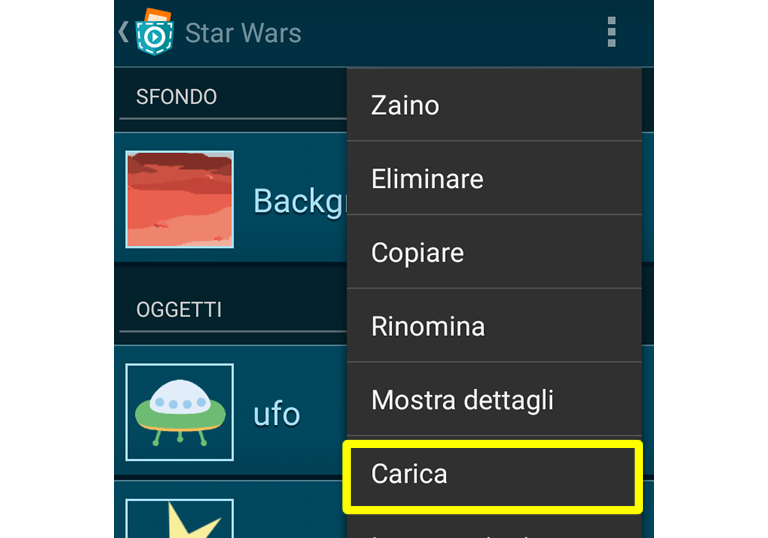
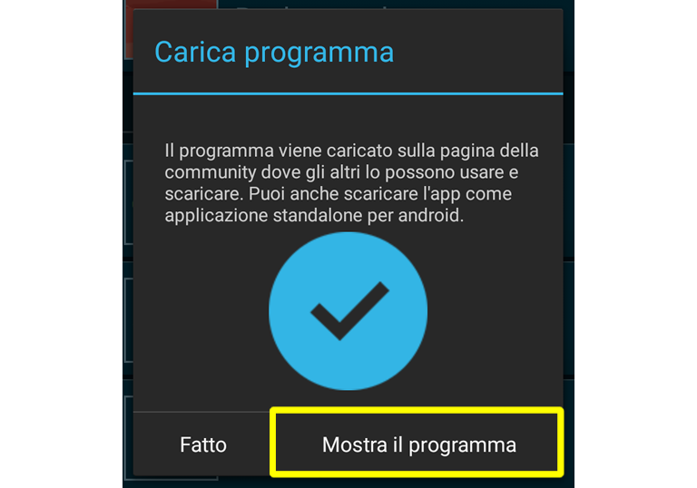

Come posso participare?
Decidi se vuoi partecipare da solo, con un team o con la tua classe. In quest'ultimo caso informa il tuo docente. Segui “Primi passi e regole” e inizia a creare il tuo progetto con Pocket Code.
Come imparare a programmare?
Non preoccuparti se non hai alcuna esperienza di programmazione, è più semplice di quel che potresti pensare! Il pulsante “Aiuto” all'interno dell'app di Pocket Code ti porta a dei semplici tutorial, utili per iniziare. Inoltre c'è una community disposta ad aiutarti e puoi scaricare un'enorme quantità di programmi già sviluppati dal sito web del programma; essi possono diventare un'ottima fonte di ispirazione per creare il tuo gioco. Puoi accdervi facendo click sul pulsante “Esplora” da dentro l'app.
Materiale utile per partire
Per semplificare la creazione dei personaggi, abbiamo creato delle risorse grafiche che puoi liberamente utilizzare nei toi giochi. Puoi trovare i dettagli sui termini d'uso leggendo le FAQ.
Primi passi e regole
Se decidi di lavorare in team, inizia con scegliere un nome da dare al team. Se pensi di poter partecipare con la tua classe, invita un tuo docente a riempire questo modulo.
Poi dai un'occiata alla libreria dei personaggi per prendere ispirazione da alcuni disegni creati per te. Usali pure dentro la tua app o, più sempliemente, per prendere spunto per l'ambientazione del tuo gioco. Certamente puoi usare personaggi e disegni forniti da terze parti, ma ti invitiamo a prestare attenzione ad eventuali copyright e licenze d'uso.
Siccome l'app deve avere come tema lo spazio, pensa a che tipo di programma vuoi creare (un gioco, un'animazione, una storia, e così via).
Per renderla maggiormente interessante ti suggeriamo alcune caratteristiche che l'App potrebbe avere (sono solo dei suggerimenti che puoi usare oppure no; non sei obbligato a utilizzarli):
★ Una pagina di benvenuto
★ Una breve descrizione
★ Una schermata per quando vinci
★ Una schermata di gioco finito
★ Musica o suoni
★ Sensori
★ Un secondo livello
★ Collisione tra personaggi
★ Un'altra lingua straniera
Invio
Quando hai finito di creare l'app, potrai caricarla sul sito pocketcode.org in modo da poterla inserire nei progetti partecipanti all'evento. Per farlo puoi, da dentro l'app, fare click sul menu posto in alto.

Una volta che hai fatto la registrazione oppure effettuato il log in, viene mostrata l'opzione di upload. Una volta selezionato puoi inserire il nome del gioco e aggiungere una descrizione. Per cortesia inserisci, nella descrizione, anche l'hashtag #GalaxyGameJam. Quando premi su 'Upload' un messaggio appropriato viene mostrato e potrai vedere l'app caricata sul sito della community. Premi su 'Mostra programma'.

Ora, se tutto è andata a buon fine, puoi vedere il tuo programma sul sto della community. Fintantochè dura l'evento, vedrai, sul sito sotto il tuo programma, un pulsante per la sottomissione all'evento. Premi tale pulsante al fine di inserire i tuoi dati e completare la sottomissione della tua app.
Una volta completata la sottmissione, il tuo programma comparirà nella Wall of Fame. Ricordati che potrai modifiare anche successivamente il tuo programma, purchè, quando rifai l'upload, non cambi il suo nome. Questo lo puoi fare fino al giorno 31/12/2016 ore 23:59.